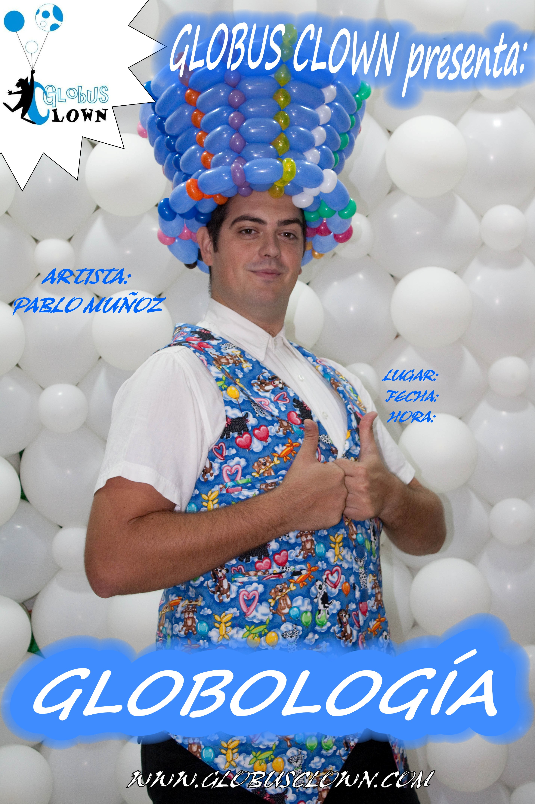

Globología
Globología es una animación donde se podrá disfrutar del maravilloso mundo de los globos, donde aparecerán los globos más coloridos y asombrosos, no sólo por sus tamaños sino también por sus colores y formas.
Pablo Muñoz es artista globero desde el año 2002, y ahora después de sus experiencias y explosiones de miles de globos realiza este espectáculo con los mejores números con globos que ha aprendido en su vida.

